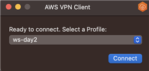

선수 유의사항
- 선수의 계정에는 비용의 제한이 존재하며, 이보다 더 높게 요금이 부과될 시 계정 사용이 불가능할 수 있습니다.
- 문제에 제시된 괄호 박스 <>는 변수를 뜻함으로 선수가 적절히 변경하여 사용해야 합니다.
- EC2 인스턴스의 TCP 80/443 outbound는 anyopen하여 사용할 수 있도록 합니다.
- 과제의 Bastion 서버에서 대부분의 채점이 이루어짐으로 인스턴스를 생성하지 않았거나 종료된 상태면 채점이 불가능하니 각별히 주의하도록 합니다.
- 과제 종료 시 진행 중인 테스트를 모두 종료하여 서버에 부하가 발생하지 않도록 합니다.
- 별도 언급이 없는 경우, us-east-1 리전에 리소스를 생성하도록 합니다.
- 모든 리소스의 이름, 태그, 변수과 변수는 대소문자를 구분합니다.
- 과제 종료 시 배포 또는 버킷 등 불필요한 리소스는 전부 삭제하시길 바랍니다.
2-1. AWS Client VPN

VPC 구성
- VPC 를 생성하고 Public subnet과 DB subnet을 구성합니다.
- 각 서브넷은 A, B 존 2개를 생성 해야하고 그림에 있는 CIDR과 VPC에는 “Name=day2-my” 태그를 추가 하도록 합니다.
- Public 서브넷은 IGW를 통하여 연결 됩니다.
- DB 서브넷의 경우 인터넷 접근이 불가해야 함으로 라우팅 테이블에 NAT G/W, IGW 과 같은 게이트웨이가 존재하면 안됩니다.
DB 구성
- DB 서브넷에 Aurora PostgreSQL을 구성합니다.
- DB identifier는 day2-my-pg를 사용하고 포트는 기본포트, 루트 계정 이름은 day2_root로 설정합니다.
- 백업 등 기타 DB 설정은 자유롭게 구성합니다.
- 단 psql client를 활용해 day2_root 계정으로 DB 접근시 문제가 있으면 안됩니다.
- RDBMS 구성이 끝나면 내부에 “day2” 라는 데이터베이스를 만들어 둡니다.
| 항목 | 값 |
|---|---|
| DB identifier | day2-my-pg |
| 포트 | 기본포트 |
| 루트 계정 이름 | day2_root |
| 데이터베이스 | day2 |
DNS 구성
- Route53에서 과제의 VPC와 연결된 Private Hosted Zone을 생성합니다.
- 호스트존 이름은 “day2.local”을 사용합니다.
- 그리고 db.day2.local 이라는 CNAME 레코드를 생성하고 생성한 Aurora Endpoint를 연결합니다.
- nslookup시 DB의 Private IP주소가 반환 되어야 합니다.
- 해당 레코드를 이용하여 DB에 접근합니다.
Client VPN 구성
- AWS Client VPN을 구성 하도록 합니다.
- Local PC에서 VPN 연결 시 day2-my-pg에 psql을 통해 접근할 수 있어야 합니다.
- 또한 day2.local hostzone에 있는 DNS 레코드들도 쿼리할 수 있어야 합니다.
- 인증 타입은 선수가 원하는 방식을 사용해도 무방하며, 이외의 값은 적절한 값을 사용합니다.
- AWS Client VPN용 클라이언트를 Local PC에 설치하고 아래 그림과 같이 VPC에 연결하기 위한 ws-day2 프로필을 미리 설정 해둡니다.
- 연결에 성공하면 db.day2.local 레코드 쿼리가 가능하고 VPC에 있는 Aurora Postgres에 성공적으로 연결할 수 있어야 합니다.
주의Local PC에 Postgres서버를 설치해 접속을 유도하거나 host 파일 변조, day2-my VPC에 있는 day2.local이 아닌 다른 DNS 존 사용 등 문제에서 제시한 것 외에 다른 방법이라고 심사위원 판단 시 틀린 것으로 간주합니다.
